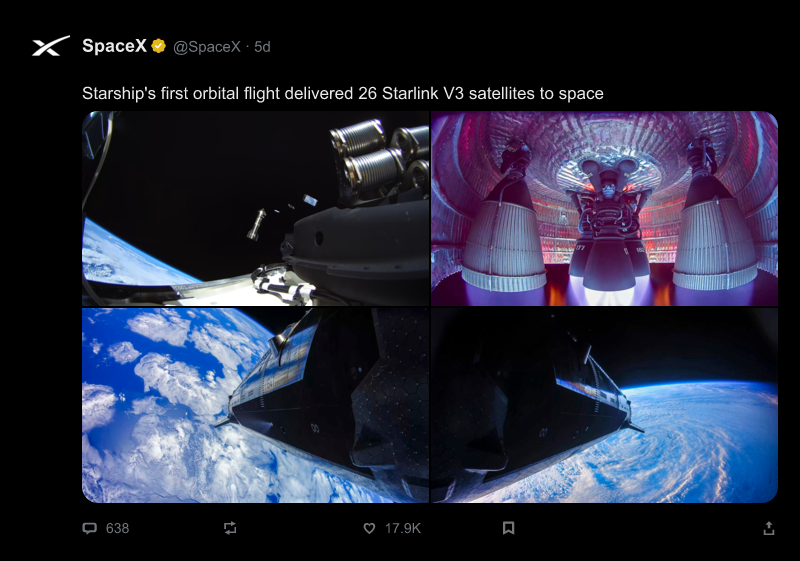

Turn an post into a PNG.
A CLI tool for turning an X post into a PNG.
npm i -g xpostplate
xpostplate https://x.com/SpaceX/status/[slug] > post.png
No flags: the opened post as x.com shows it, photos included. --view plate --no-media is the bordered broadcast card. Install docs · Homebrew HEAD: brew tap jspeaks/xpostplate && brew install --HEAD xpostplate

--view timelinetimeline row format--view detaildetail post format (default)--view quotequote only format--view platebroadcast card--fabricateinvents a post--no-mediatext only